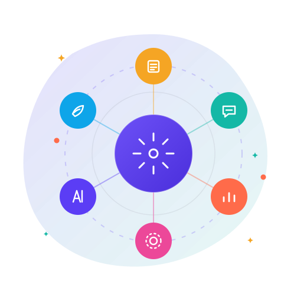
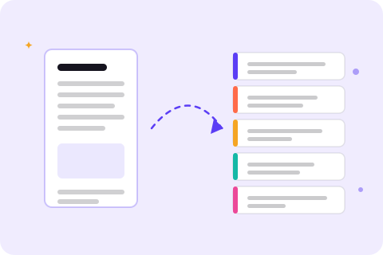
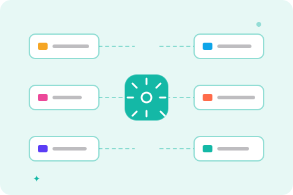
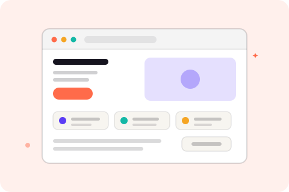

Growth strategy
Find the one or two channels that actually pay back, then commit to them properly instead of spreading budget across five.
Growth & Marketing Consultant · Kosovo
Most marketing dies the week the campaign ends. I build the part that doesn't: the content pipeline, the routing, the playbook — so growth stops depending on anyone being in the room.

01 — How I help
Find the one or two channels that actually pay back, then commit to them properly instead of spreading budget across five.
One strong idea should become a month of posts, in both languages, without anyone rewriting it from scratch every Friday.
Campaigns launched to be measured, with a stop rule agreed in advance — not a spend that keeps going because nobody wants to admit it failed.
Levelling up the people doing the work, so output stops depending on the one person who happens to be good at it.
02 — Selected work
Four real projects, all public, all running. I've written each one as an outcome rather than a tech stack — if you don't know what an "agent skill" is, you don't need to.

Featured toolWrite once. Publish everywhere, in two languages.
Point it at an article, a repository, or a messy wall of notes. It reads the source and produces five structured posts — a hook, the discovery, the mechanism, the application, and the action — sized for X or LinkedIn, in English or Albanian.
Now registered inside AIOS as social-thread-writer, so the router can dispatch to it on its own triggers — no special request needed.

SystemStop starting from scratch, ever again.
A personal operating system for AI work. Twenty-two skills registered, eighteen of them finished and working — each one a small specialist with a clear trigger. A central router reads the request, works out what's being asked, and hands it to the right skill.
Tone is a growth asset, not decoration.
A digital storytelling piece built around pacing and atmosphere — editorial typography, a deliberate rhythm of reveals, and colour doing the emotional work. It exists to prove a point: the same message lands differently depending on how it is dressed.

Client-readyI take things from blank page to live URL.
A complete four-page site — home, about, work, contact — written, designed, built and deployed on a real domain. No developer subcontracted, no handoff delay. It's also the site you're reading the design language of right now.
Everything above is public and clickable. The code is on github.com/arlinda-k14.
03 — How we start
Two weeks inside your analytics, ad accounts and content. I come back with what's actually working, what's quietly burning money, and what I'd stop immediately.
One page. Priorities in a defensible order, each with the number it's meant to move and the cost to move it. If the answer is "stop doing three things", that's the deliverable.
I build it, document it, and walk your team through it. You own every account, file and document. No hostage situations.

04 — About
I lead growth and marketing at Creative Hub Kosovo, where I also mentor learners coming through their digital marketing academy. In 2025 I co-founded AdGate. Before that it was social media, advertising and content at Mbresa Digital Agency — which is where I learned that most "marketing problems" are really "nobody owns the follow-through" problems.
I work in Albanian and English, and I'm learning Norwegian. If your market is Kosovo or the wider region, I'll have written the thing in the language your customers actually read.
05 — Contact
A short message is plenty. If I can help, I'll say so and tell you roughly what it would take. If I can't, I'll point you to someone who can.